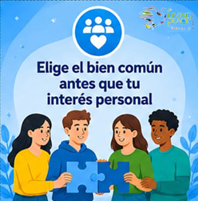
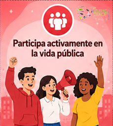
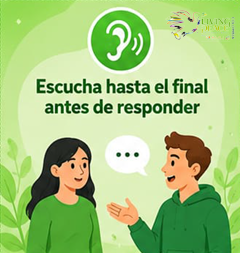
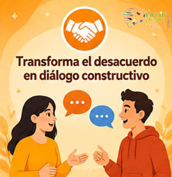
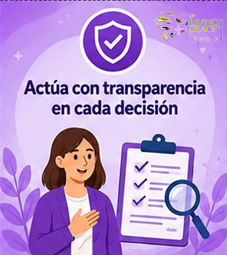
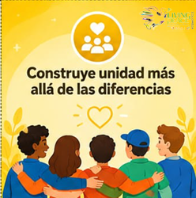

TU GESTO POLÍTICO DE PAZ
Elige el bien común antes que tu interés personal
Antes de decidir, pregúntate si tu elección ayuda a todos, especialmente a quienes más necesitan ser escuchados.
POLÍTICA · PARA LA PAZ
Lanza el dado y descubre una acción concreta para vivir la política como servicio, diálogo, transparencia y unidad.






Antes de decidir, pregúntate si tu elección ayuda a todos, especialmente a quienes más necesitan ser escuchados.
LAS SEIS CARAS
Pulsa una tarjeta para convertir la participación ciudadana en una acción concreta.
“La política se vuelve paz cuando busca el bien común y escucha antes de decidir.”
Escucha · Transparencia · Unidad